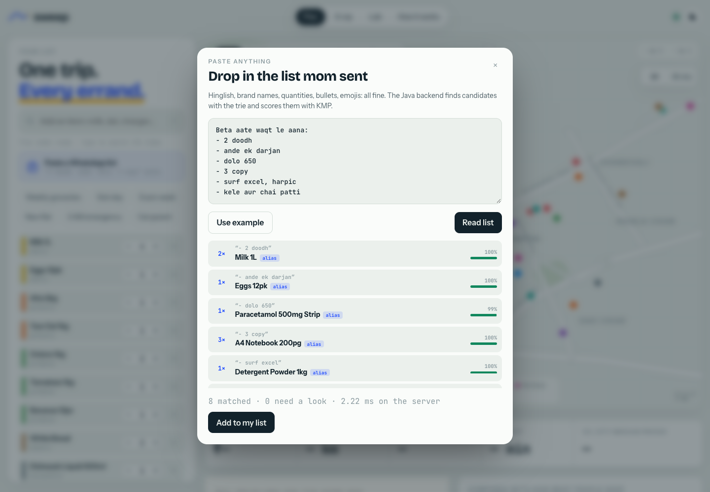
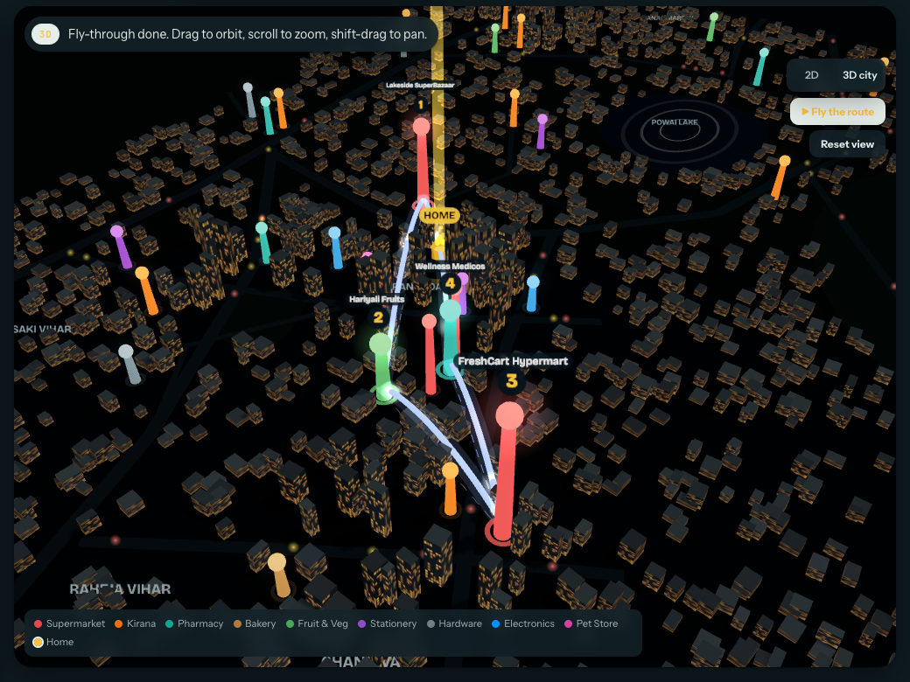

Advanced Algorithms · CIA 3 · B.Tech CS AI & ML · Semester V · 2026–27
Sweep
One trip, every errand. Paste the list your family sent, and Sweep turns it into the cheapest, shortest single trip across Powai. Driven by a trie, KMP, Bloom filters, greedy set cover, a metric-TSP approximation and randomized selection.
1Problem statement
A typical week in a Mumbai suburb has a list that spans several kinds of shop: groceries from a supermarket, medicine from a chemist, a notebook from a stationer, a bulb from a hardware store. Most people take one of two approaches. They walk to the nearest shop, then the next nearest, until they've got everything. Or they chase the lowest price per item and criss-cross the suburb. The first overpays and the second wastes travel. Neither checks whether a shop is open or has enough stock.
Lists rarely arrive tidy. They come as a WhatsApp message in Hinglish with brand names ("2 doodh, ande, dolo, 3 copy, surf excel"). So the planner also has to read free text reliably, and hand the result over to the tools people already use (Google Maps, WhatsApp).
Target user: a student or working resident of Powai planning a single errand run on foot, by cycle or by auto-rickshaw. Decision improved: which shops to visit, what to buy where, and in what order, so that basket price + travel cost + per-stop overhead is minimised.
Inputs, outputs and constraints
| Input | Constraint | Validation behaviour |
|---|---|---|
| Home location (km grid) | 0 ≤ x ≤ 8, 0 ≤ y ≤ 6 | 400 with message if outside |
| Pasted free text | ≤ 3,000 chars | Header lines skipped; lines below 50% confidence returned unmatched with alternatives, never guessed |
| Item lines | 1–20 lines, qty 1–50, known item | Empty list rejected; unknown names get trie "did you mean"; duplicate lines merged with a notice |
| Departure hour | 0–23 | Closed shops excluded; items only stocked at closed shops are reported with opening times |
| λ (price weight), ₹/km, ₹/stop, speed | 0–5, 0–100, 0–500, 3–60 | All out-of-range values listed together in one 400 response |
Output: an ordered list of stops with a pick-list per stop, prices, per-item deal score against the city median, totals (₹, km, minutes), two baseline strategies for comparison, and an algorithm trace: Bloom outcomes, set-cover steps, MST edges, preorder and final tours, and Held-Karp ratio. It also returns a Google Maps directions URL (home → stops → home; grid points are mapped to real Powai coordinates by a landmark-anchored warp: a least-squares affine fit plus inverse-distance-weighted correction, so Hiranandani, IIT, the lake and Chandivali open in their real places) and a WhatsApp-ready summary, and flags any stop the user would reach within 15 minutes of closing. Items that cannot be bought are never dropped silently. Each is returned in unmet with the reason: not stocked anywhere, insufficient stock at any single open shop, or only stocked at closed shops.
Measurable success criteria
- Every returned pick is genuinely stocked, with enough units, at the assigned shop. Asserted in tests for every plan.
- Zero Bloom false negatives, with observed false-positive rate within sampling error of (1 − e−kn/m)k.
- Set-cover cost ≤ H(n) · OPT (λ = 0), measured against the exact DP.
- Route length ≤ 2 · OPT, measured against Held-Karp. Target average gap below 5% after 2-opt.
- Total trip cost no worse than the "nearest store first" and "cheapest everywhere" strategies on the sample lists.
- Plan latency under 50 ms for a 20-item list on a laptop.
2Data
A seeded Python generator (tools/generate_dataset.py, seed 42) produces a realistic synthetic dataset committed to data/: 176 items in 12 categories with MRP-style base prices, 36 shops of 9 types (supermarket, kirana, pharmacy, bakery, fruit & veg, stationery, hardware, electronics, pet) placed around real Powai localities, and 770 inventory listings. Each listing price = base × store-type multiplier × U(0.88, 1.15). Stock is 3–40, with about 6% deliberately set to 1–2 units so quantity feasibility matters. Opening hours vary, and some pharmacies are open 24 hours. Distances are real road distances. data/roads.json holds 29 Powai roads and lanes. RoadNetwork splits them at every crossing and T-junction into a graph, joins each shop and the home to the nearest road, and runs Dijkstra with our own binary heap (Unit 2, O((V+E) log V)) for shortest paths. Shortest-path distances on an undirected graph are a metric (joining two shortest paths is a valid path), so the TSP 2-approximation bound holds. MetricTsp.validate also checks the triangle inequality at run time. The map draws exactly the road paths the planner used.
3System design
The layers follow the brief's recommended architecture. algo/ holds dependency-free, self-written implementations, using only java.util collections as support. domain/City loads the CSVs and builds the trie and one Bloom filter per shop at start-up. service/ composes the algorithms into the pipeline. web/ handles HTTP, input validation and error mapping. Spring provides infrastructure only. The frontend never computes a result. It sends the request and animates the trace the server returns.
4Algorithms, pseudocode and correctness
4.1 Trie over word-start suffixes (Unit 4, CO3)
insert(name, id): for each position s where s = 0 or name[s-1] = ' ':
walk/create nodes for name[s..]; add id at the last node
suggest(p, k): node ← walk p from root (fail → empty)
DFS from node in character order with an explicit stack,
collecting distinct ids until k are found
Correctness: an id is reachable from prefix p if and only if some inserted suffix starts with p, which happens if and only if some word of the name starts with p. The stress test compares against a linear scan on 2,000 random names. Complexity: insert O(L²) worst case per name (O(L) per word suffix). Query O(|p| + V), where V is the number of nodes visited before k ids are found. It is independent of catalogue size N, while a scan is O(N·L).
4.1b KMP inside the paste parser (Unit 4, CO3)
failure[0]=0; for i in 1..m−1: k←failure[i−1]; while k>0 and P[i]≠P[k]: k←failure[k−1]
if P[i]=P[k]: k++; failure[i]←k
search: j←0; for each T[i]: while j>0 and T[i]≠P[j]: j←failure[j−1]; if T[i]=P[j]: j++
if j=m: report i−m+1
parseLine: qty ← regex (2, x2, "do", "teen"; sizes like 5kg kept); words ← aliases (doodh→milk, dolo→paracetamol)
C ← ∪ trie.suggest(word); score(c) = Σ_word [KMP finds word in c] · (|word| + 1.5 if at a word start)
confidence = score / (Σ|word| + 1.5·#words) + 0.25; accept best if ≥ 0.5, else return alternatives
Correctness: failure[i] is the longest proper border of P[0..i]. On a mismatch, falling back to the border keeps every alignment that could still match, so no occurrence is skipped (tested against String.indexOf on 500 random cases and for overlapping matches). Complexity: O(m) table and O(n + m) search, because j rises at most n times overall and each fallback lowers it. The naive matcher is O(n·m) on texts like "aaa…ab", which §6 shows. The parser never guesses: lines under the 50% threshold come back unmatched with trie alternatives.
4.2 Bloom filter with exact confirmation (Unit 6, CO5)
m ← ⌈−n ln p / (ln 2)²⌉, k ← round((m/n) ln 2), salt ← random 64-bit h1 ← mix(fnv1a(key) ⊕ salt); h2 ← mix(h1 + φ) a ← h1 mod m; b ← 1 + (h2 mod (m−1)) // non-zero stride positions(key) = { (a + i·b) mod m : i = 0..k−1 } // Kirsch–Mitzenmacher add: set all positions; mightContain: all positions set? planner: if !mightContain → "definitely not"; else → look up real inventory
Correctness: bits are only ever set, so an inserted key's k bits stay 1, and there are no false negatives. A test checks every inserted key, and the planner test checks that no "definitely not" shop actually stocks the item. A positive is treated as "possibly present" and always followed by the authoritative inventory lookup, as the brief requires. The false-positive probability after n inserts is (1 − e−kn/m)k, validated empirically in §6. The random salt makes the filters independent per shop and stops an adversary pre-computing colliding keys. Complexity: O(k) time per operation, m bits of space. A shop with 30 items at 1% needs about 288 bits (36 bytes) against kilobytes for a hash set. That is why a phone client could cache every shop's sketch offline.
4.3 Greedy weighted set cover (Unit 5, CO4) and exact DP baseline (CO6)
U ← requested items coverable by some open shop; report the rest as unmet
cost(j) = stopCost + kmCost · 2 · d(home, j)
while U ≠ ∅:
j* ← argmin_j (cost(j) + λ · Σ_{e ∈ S_j ∩ U} premium(j,e)) / |S_j ∩ U|
choose j*; U ← U \ S_j*
exact(n ≤ 16): dp[0]=0; for mask ascending, for each j: dp[mask|S_j] ← min(dp[mask]+cost(j))
Correctness / guarantee: the loop terminates because each pick covers at least one new element, and it covers every coverable element. With λ = 0 this is Chvátal's greedy, so cost ≤ H(n)·OPT with H(n) = Σ1/i ≤ ln n + 1. The proof charges each element the price-per-element at the moment it is covered, and the k-th last element costs at most OPT/k. With λ > 0 the price-premium term turns it into a heuristic, and the app and API say so explicitly (guaranteeApplies = false). After choosing shops, each item is assigned to the cheapest chosen shop with enough stock. A shop left with no picks is dropped and a notice is returned. The DP is exact because every reachable mask is processed after all its subsets (masks only grow). Complexity: greedy O(m · n · picks). DP O(2ⁿ · m) time and O(2ⁿ) space. Set cover is NP-hard, so the exponential DP is a baseline only.
4.4 Metric TSP: double-tree + 2-opt (Units 2 and 5, CO2/CO4) and Held-Karp (CO6)
edges ← all pairs; randomizedQuickSort(edges by weight) // 3-way partition DSU ← makeSets(n); for e=(u,v) in order: if DSU.union(u,v): MST += e // Kruskal tour ← preorder(MST from home), skipping visited vertices // shortcutting repeat until no improvement: // 2-opt for i<j: if d(t[i-1],t[j]) + d(t[i],t[j+1]) < d(t[i-1],t[i]) + d(t[j],t[j+1]): reverse t[i..j] heldKarp: dp[S][v] = min_u dp[S\{v}][u] + d(u,v); answer min_v dp[all][v] + d(v,0)
Correctness: Kruskal's MST is minimal by the cut property, and union by rank with path compression rejects exactly the cycle-forming edges. A full walk of the MST costs 2·w(MST). Shortcutting repeated vertices never increases length by the triangle inequality. Since deleting one edge of the optimal tour gives a spanning tree, w(MST) ≤ OPT, so tour ≤ 2·OPT. 2-opt only accepts strictly improving swaps, so it keeps the bound and terminates. validate() rejects non-square, negative, asymmetric or triangle-violating matrices. Complexity: O(n² log n) for sorting n(n−1)/2 edges, plus O(n² α(n)) for the DSU work, plus O(n²) per 2-opt pass. Space O(n²). Held-Karp takes O(n² 2ⁿ) time and O(n 2ⁿ) space and runs only for trips of up to 12 stops.
4.5 Randomized quickselect and quicksort (Unit 6, CO5)
select(a, k): lo,hi ← 0,n−1
loop: pivot ← a[random(lo..hi)]; (lt, gt) ← partition3(a, lo, hi, pivot)
if k < lt: hi ← lt−1 elif k > gt: lo ← gt+1 else return a[k]
Correctness: after the 3-way partition, positions lt..gt hold exactly the pivot value, with smaller values to the left and larger to the right. So a[k] is final when lt ≤ k ≤ gt, and otherwise the k-th element lies in the side that is kept (loop invariant). Complexity: expected O(n). A uniformly random pivot lands in the middle half with probability ½, shrinking the range to at most ¾, so the expected work is a geometric series ≤ 4n·c. The 3-way partition keeps all-equal arrays, which are common for prices, linear. A plain Lomuto partition would be Θ(n²) on them. The deterministic first-pivot baseline is Θ(n²) on sorted input, as §6 shows. Used for per-item city median, min and max (deal score) and, as randomized quicksort, for Kruskal's edge order.
5Testing
70 JUnit 5 tests, all passing (./mvnw test). Every core algorithm has at least five, each including a boundary or edge case:
| Class | Tests | Edge / boundary / stress cases |
|---|---|---|
| TrieTest | 8 | empty prefix, missing prefix, mid-word substring not matched, k limit, invalid args, 2,000-name stress vs linear scan |
| KmpTest | 6 | classic failure tables, overlapping matches, 500 random cases vs String.indexOf, empty text / pattern longer than text, 2M-char adversarial text in linear time |
| ListParserTest | 7 | Hinglish WhatsApp message, qty forms (x4, "do", 5 pcs, 5kg kept as size), brand → generic, exact match, unknown item not guessed, ambiguous → alternatives, empty / too long |
| BloomFilterTest | 7 | empty filter, sizing formula (m=9586, k=7), saturated 16-bit filter, no false negatives on 5,000 keys, observed FP vs theory on 200k probes |
| RandomizedSelectTest | 7 | every rank vs sort, single element, 200k all-duplicates (linear time), percentile 0/100, caller array untouched, empty / out-of-range k |
| SetCoverTest | 7 | empty universe, uncoverable element reported, classic greedy trap within H(n), exact DP vs 2m brute force on 30 instances, λ behaviour, invalid input |
| MetricTspTest | 6 | n = 1, 2, duplicate points, 2× bound on 40 instances, MST vs Prim, Held-Karp vs permutation brute force, non-metric rejection |
| DijkstraTest | 7 | vs Floyd-Warshall on 30 random graphs, unreachable vertex, zero weights, single vertex, heap order with growth, copy isolation, negative weights rejected |
| DisjointSetTest | 5 | n = 0, 200k-element chain, idempotent union |
| PlannerServiceTest | 9 | end-to-end stock check, route follows roads home → home (drawn length = reported km, never shorter than straight line), no Bloom false negatives, empty list, unknown item + suggestion, duplicate merge, 2 AM (closed shops), qty above any stock, all-invalid parameters, route ≤ 2·OPT |
6Benchmarks
Method: BenchmarkService runs on the server through /api/bench/* and in the Lab tab, with fixed seeds, two JIT warm-up runs and the median of five timed runs. Hardware: Apple M5, JDK 26. Wall-clock times are machine-dependent. Ratios and counts are reproducible.
Trie vs linear scan (ns / query)
| n names | trie | scan | speed-up |
|---|---|---|---|
| 1,000 | 2,085 | 15,499 | 7.4× |
| 10,000 | 1,005 | 13,462 | 13.4× |
| 100,000 | 593 | 13,554 | 22.9× |
The scan stops after 8 hits, so it does not grow linearly here. The trie's per-query cost stays flat (it falls slightly as the JIT warms up) while the scan stays at about 13 µs.
Bloom filter, n = 100,000 (100k absent probes)
| target | observed | theory | k | KB |
|---|---|---|---|---|
| 5% | 5.145% | 5.027% | 4 | 76 |
| 1% | 1.027% | 1.004% | 7 | 117 |
| 0.1% | 0.103% | 0.100% | 10 | 176 |
A HashSet of the same keys is ≈ 6.1 MB (53× larger at 1%). Lookup is about 2× slower (≈ 20 ns vs 11 ns), so the benefit is memory, not speed. No false negatives in any run.
KMP vs naive matching (ms, pattern "a×199 b")
| n | KMP adversarial | naive adversarial | KMP random | naive random | speed-up |
|---|---|---|---|---|---|
| 50,000 | 1.43 | 7.57 | 0.51 | 0.46 | 5.3× |
| 200,000 | 0.51 | 30.70 | 0.25 | 0.26 | 60.4× |
| 800,000 | 2.04 | 122.41 | 1.05 | 1.07 | 59.9× |
On ordinary text both run at the same speed. KMP's advantage appears only on adversarial or repetitive input, where it removes the n·m blow-up. The paste parser itself handles a 9-line Hinglish message in about 2 ms.
Randomized vs first-pivot quickselect (ms)
| input | n | randomized | first-pivot | sort + pick |
|---|---|---|---|---|
| random | 10,000 | 0.145 | 0.170 | 0.452 |
| random | 100,000 | 0.843 | 0.598 | 6.241 |
| random | 1,000,000 | 9.154 | 8.316 | 74.204 |
| sorted | 2,000 | 0.004 | 0.058 | 0.024 |
| sorted | 8,000 | 0.012 | 0.440 | 0.109 |
| sorted | 32,000 | 0.047 | 3.431 | 0.653 |
When randomization helps: on random input both pivots behave alike, and both beat sorting by about 8× at 10⁶ (O(n) vs O(n log n)). On sorted input, which is common for data that arrives already ordered, the first-pivot version is quadratic: ×4 n gives ×7.8 time. The random pivot stays linear and is 73× faster at 32k.
Greedy vs exact set cover (20 instances, 30 sets)
| n | avg | worst | H(n) | greedy µs | exact µs |
|---|---|---|---|---|---|
| 8 | 1.068 | 1.300 | 2.718 | 8.0 | 84.7 |
| 12 | 1.077 | 1.307 | 3.103 | 10.4 | 170.4 |
| 16 | 1.101 | 1.293 | 3.381 | 12.7 | 548.0 |
| 18 | 1.083 | 1.260 | 3.495 | 14.5 | 925.7 |
Route quality (tour ÷ baseline)
| n | double-tree | +2-opt | NN | vs |
|---|---|---|---|---|
| 6 | 1.126 | 1.000 | 1.065 | OPT |
| 9 | 1.140 | 1.004 | 1.085 | OPT |
| 12 | 1.232 | 1.024 | 1.175 | OPT |
| 200 | 1.557 | 1.254 | 1.442 | MST |
| 800 | 1.533 | 1.231 | 1.364 | MST |
Greedy cover averages about 8% above optimum, far inside the H(n) bound, while the exact DP's time roughly doubles with every extra item. Double-tree alone is worse than nearest-neighbour in practice despite its better guarantee. With 2-opt, Sweep averages 0.9% above the Held-Karp optimum on realistic trip sizes (worst observed 12.6%). For n = 800 the tour is within 1.23 × MST, a lower bound on OPT.
End-to-end ("Weekly groceries", 10 items, 18:00, auto-rickshaw)
| Strategy | stops | km | basket | trip cost | min |
|---|---|---|---|---|---|
| Sweep | 4 | 6.7 | ₹1,171 | ₹1,451 | 54 |
| Nearest store first | 4 | 6.5 | ₹1,255 | ₹1,532 | 54 |
| Cheapest everywhere | 8 | 18.4 | ₹1,125 | ₹1,776 | 125 |
Bloom pre-screen on this request: 360 shop × item checks, 306 rejected by a zero bit, 4 false positives caught by the exact check (observed 1.29% vs 0.99% theoretical), total 0.10 ms. The route was confirmed optimal by Held-Karp (ratio 1.000).


7Limitations and failure cases
- Road model. Roads are undirected and hand-digitised at street level, with no one-ways or traffic. One-way streets would make distances asymmetric, and the symmetric 2× TSP bound would then not apply.
- Set-cover cost model. The round-trip-from-home proxy over-estimates the marginal detour of a shop near other chosen shops. The H(n) guarantee is with respect to this proxy cost, not the final route length. With λ > 0 there is no guarantee at all.
- Single-shop purchase per item. If no open shop has the full quantity but several together do, Sweep reports the item as unmet instead of splitting it. This is a deliberate simplification, and splitting would be a max-flow extension.
- Exact baselines are bounded to n ≤ 16 (set cover) and ≤ 13 nodes (Held-Karp). Above that, only the bounds are reported.
- Bloom filters are static. Removing an item would need a counting Bloom filter. Sketches are rebuilt at load time.
- Paste parser vocabulary. The alias table covers common Hindi, Marathi and brand words. Unknown slang falls back to trie prefixes and is flagged, never guessed.
- Synthetic data. Prices and stock are generated, not scraped, so no real shop's prices are represented.
8Individual contribution
Individual submission (team of one). All design, implementation, testing and documentation by the author.
| Member | Algorithms / modules | Other work |
|---|---|---|
| Shantanu Puthran (2405111) | All: Trie, KMP + ListParser, BloomFilter, SetCover (greedy + DP), MetricTsp, DisjointSet, RandomizedSelect, PlannerService | REST API and validation, BenchmarkService, 2D/3D frontend, Maps/WhatsApp hand-off, dataset generator, tests, README, report |
Repository: run ./mvnw spring-boot:run and open localhost:8080. Full setup in README.md.